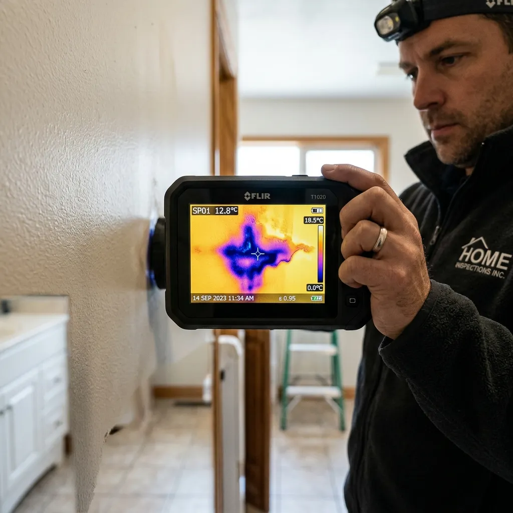
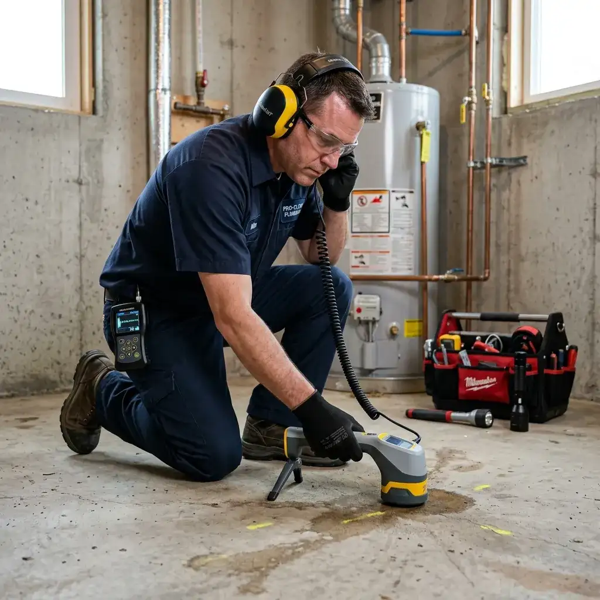
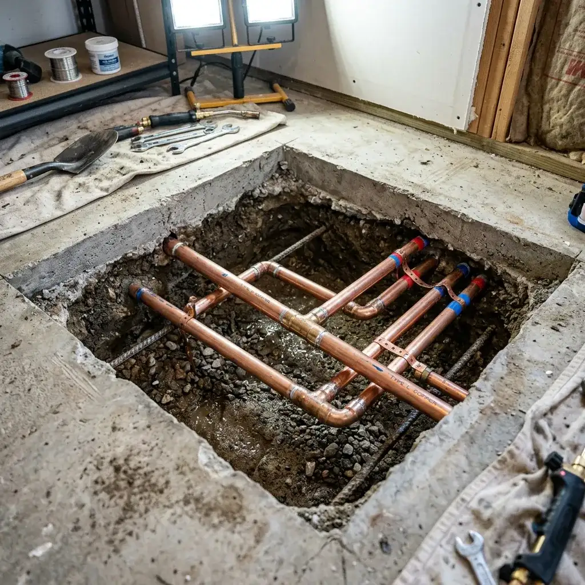
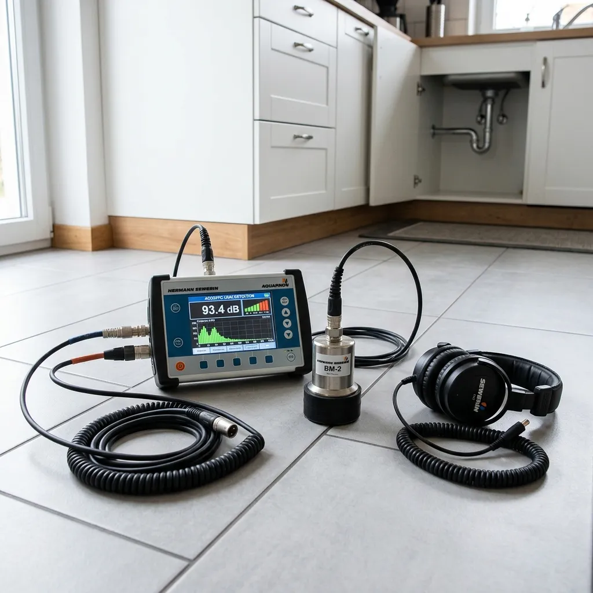
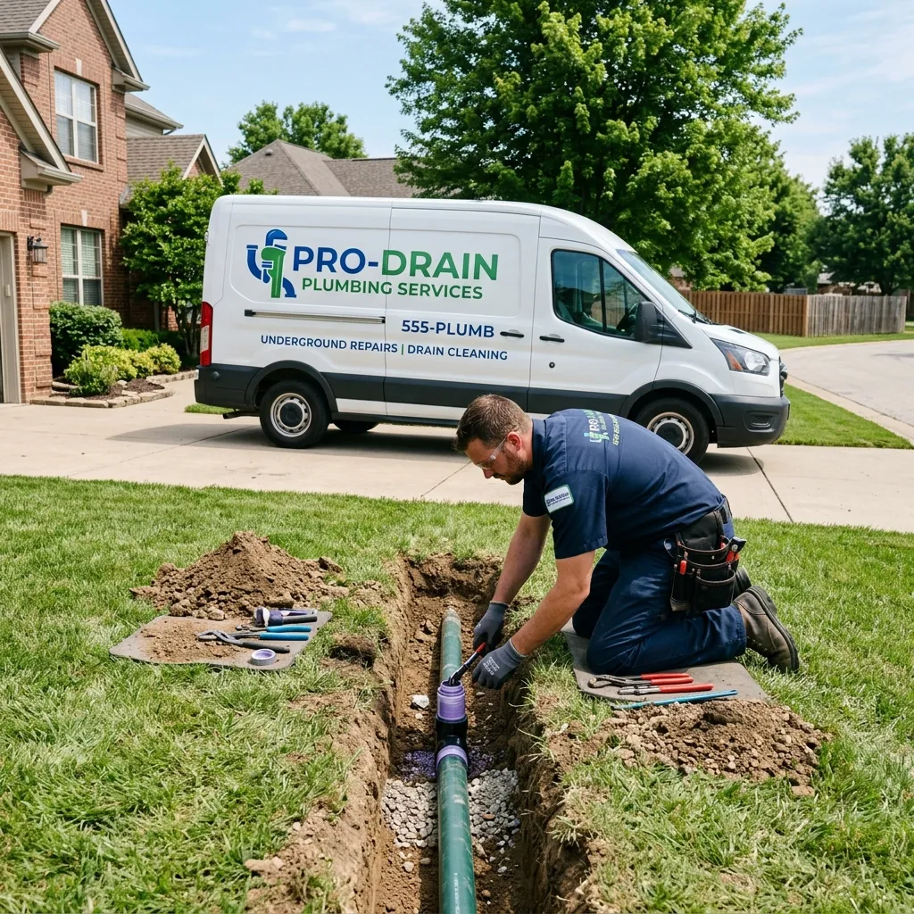
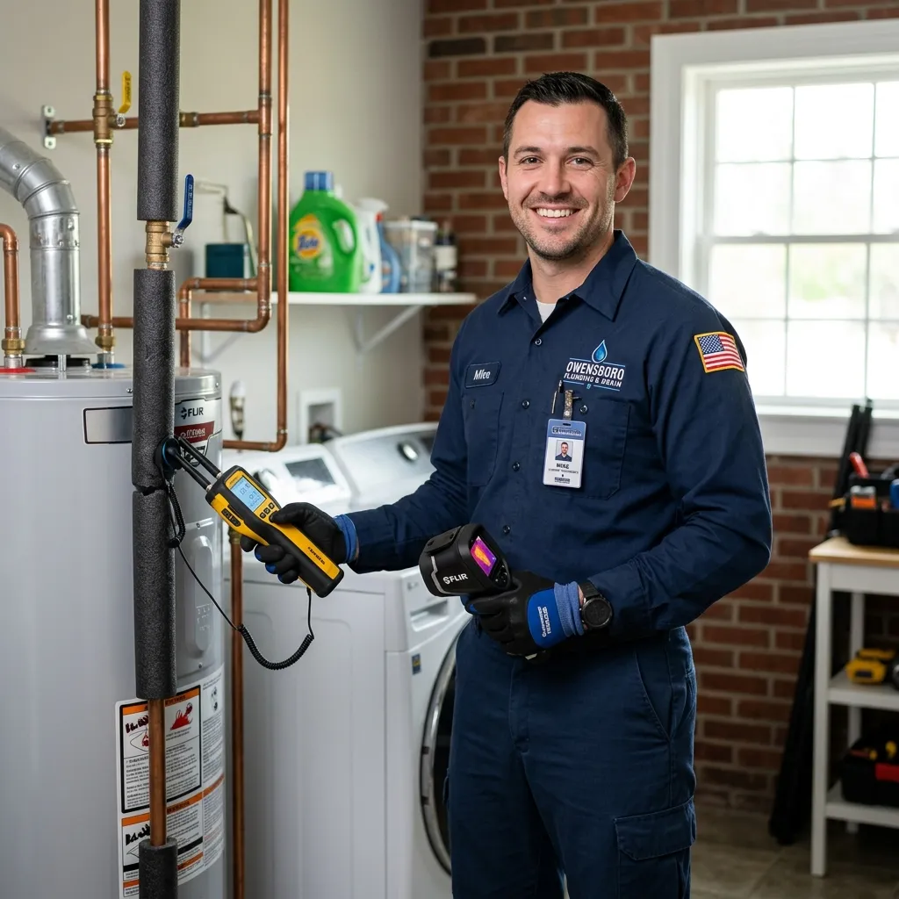

Basic Service
$89 starting · per visit
- Diagnostic visit
- Written estimate
- Same-day scheduling
- 30-day warranty

Owensboro Leak Detection Experts is proud to offer top-notch Slab Leak Detection in Maceo KY. We have been serving the Maceo community for over 15 years, providing reliable and effective leak detection services. Maceo KY is known for its older homes, which often face unique plumbing challenges. Our team is equipped with the latest technology, including thermal imaging cameras and moisture meters, to accurately detect slab leaks. We are committed to ensuring the safety and comfort of our clients by addressing potential issues before they escalate.
In Maceo KY, the demand for Slab Leak Detection is increasing as homeowners become more aware of the potential damage caused by undetected leaks. We offer a range of services tailored to meet the specific needs of this community, including 24/7 Slab Leak Detection in Maceo KY.





In Maceo KY, several factors contribute to the prevalence of slab leaks, including the age of homes, soil conditions, and seasonal weather changes. Here are some common slab leak problems we encounter in the area.
Many homes in Maceo are several decades old, leading to wear and tear on pipes, which increases the risk of leaks.
The clay soil in Maceo can expand and contract with moisture levels, putting pressure on underground pipes and causing leaks.
Older homes may have plumbing systems that were not installed to current standards, leading to increased leak risks.
Maceo experiences significant temperature fluctuations, which can cause pipes to expand and contract, leading to cracks and leaks.
Identifying the signs of a slab leak early can save you from extensive damage and costly repairs. Here are some concrete triggers that indicate you may need slab leak detection services in Maceo KY.
Sudden increase in water bills
If you notice a spike in your water bills without a change in usage, it could indicate a hidden slab leak that needs immediate attention.
Damp or wet spots on floors
Visible dampness on your flooring can signal a leak underneath your slab, which can lead to mold growth and structural damage if not addressed.
Cracks in walls or floors
Cracks appearing in your walls or floors are often a sign of shifting foundations due to water accumulation from a slab leak.
Unpleasant odors from the floor
Foul smells can indicate mold or mildew growth from water pooling beneath your slab, signaling the need for immediate leak detection.
Sound of running water
Hearing the sound of water running when no taps are on can suggest a hidden leak in your plumbing system that requires professional investigation.
The cost of slab leak detection in Maceo KY can vary based on several factors, including the complexity of the leak and the technology used for detection. Generally, homeowners can expect to pay between $300 to $800 for comprehensive leak detection services. Factors such as the age of the home and accessibility may influence the overall cost. We strive to offer affordable Slab Leak Detection services in Maceo KY without compromising quality.
Basic Service
$89 starting · per visit
Standard Repair
$249 average job
Premium Care
$499 annual plan
Navigating Maceo KY is easy thanks to its well-known landmarks. We often use these locations as reference points when providing our services, ensuring efficient access and timely arrival for our clients.
This landmark is a central point in the community, and our team is familiar with the surrounding area, allowing for quick service delivery.
As a hub for local events, we often service homes nearby, ensuring we are always close to our clients.
The park is a popular gathering spot, and our services are frequently requested by residents in the vicinity.
Plus surrounding Daviess County neighborhoods, with same-day routing on most appointments.
Averaging 4.8 / 5 across verified reviews.
“Owensboro Leak Detection Experts provided excellent service when I discovered a leak in my basement. They were prompt, professional, and resolved the issue quickly. Highly recommend!”
John D.
Maceo
“I had a slab leak that was causing my water bill to skyrocket. The team was knowledgeable and used advanced technology to find and fix the leak without tearing up my floors.”
Sarah L.
Pleasant Ridge
“Fantastic service! They were quick to respond to my emergency leak situation and did a thorough job. I appreciate their expertise and professionalism.”
Mike T.
Reidland
Maceo KY experiences distinct seasonal changes that can influence the likelihood of slab leaks. Understanding these patterns can help homeowners stay proactive in their maintenance efforts.
Spring rains can saturate the ground, increasing the likelihood of soil shifts that may lead to slab leaks.
Tip: Inspect your plumbing systems and monitor for dampness in your home as the weather warms up.
Hot, dry weather can cause the ground to dry out, leading to soil contraction and potential pipe stress.
Tip: Keep an eye on your water bills and look for any signs of leaks during this time.
Cooler temperatures can lead to condensation and moisture accumulation, increasing the risk of leaks.
Tip: Schedule a leak detection inspection before winter to address any potential issues.
Freezing temperatures can cause pipes to freeze and crack, leading to significant leaks once thawed.
Tip: Ensure your home is winterized and check for any signs of leaks after the thaw.
From our base in Maceo KY, we extend our slab leak detection services to several nearby cities, ensuring comprehensive coverage for all residents.
(City)
Philpot is just a short drive from Maceo, allowing us to serve residents efficiently.
View Philpot KY(City)
Masonville is within close proximity, making it easy for us to respond to service requests.
View Masonville KY(City)
Thruston residents benefit from our quick access to their area, ensuring timely leak detection services.
View Thruston KY(City)
Sorgho is part of our service area, and we frequently assist homeowners with slab leak detection.
View Sorgho KYReal answers from our team for the questions we hear most often before a job starts.
For reliable and affordable Slab Leak Detection in Maceo KY, trust Owensboro Leak Detection Experts. Our certified team is ready to assist you with all your plumbing needs. Contact us today for a free estimate!
We're here to help with your slab leak detection needs. Call (270) 294-6900 right now for an immediate over-the-phone consultation and same-day scheduling.
Our local slab leak experts are available 24/7 to answer your call and schedule same-day diagnostics.
Call (270) 294-6900 NowPhone
(270) 294-6900Address
2946 Fairview Drive, Owensboro, KY 42303
Hours
Mon–Fri: 7AM – 7PM
Sat: 8AM – 4PM
Sun: Emergency Only
24/7 Emergency Available